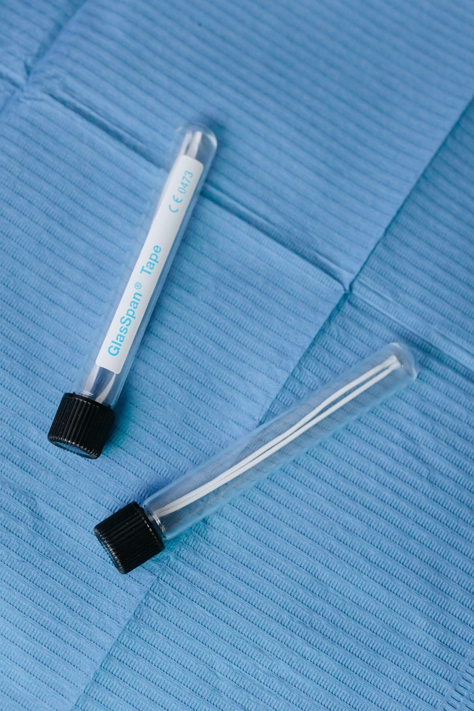

Escríbeles o llama
WhatsApp o 55 3392 5088. Ahí se te asigna un horario y se te piden datos para el registro.
Jardines de Casa Nueva · Ecatepec
Odontología integral para todas las edades, con un enfoque que ellos describen como rehabilitación biológica, estética y funcional. 4.9 estrellas en Google.

Cómo funciona
WhatsApp o 55 3392 5088. Ahí se te asigna un horario y se te piden datos para el registro.
Sin confirmación no te reciben en el momento que tú eliges. El objetivo, dicen, es cuidar la higiene y evitar esperas.
Calle 1 número 10, manzana 016, Jardines de Casa Nueva, C.P. 55430, junto a Circunvalación Norte.

Foto de stock; no es el equipo de este consultorio.
Urgencias y horario
Google lo publica abierto las 24 horas de lunes a sábado y cerrado el domingo. El propio consultorio aclara que la atención es organizada: se asigna un espacio y debe haber disponibilidad. Reseñas agradecen extracciones o dolores atendidos de madrugada o en un 24 de diciembre, y otras se quejan si no hubo respuesta inmediata. No es un servicio de puerta abierta a cualquier hora.
Voces en Google
Muchas reseñas nombran al Dr. Diego Muñoz. Hablan de un consultorio muy limpio, de explicaciones detalladas y de un buen trato con niños y adultos mayores.
“Soy diabético… pedí una cita para mi revisión fue una consulta que hasta el momento nadie me la había dado como el Dr Diego… el Dr Diego Muñoz es mi ídolo.”
Reseña en Google · diciembre de 2025 · 5 estrellas
“El Dr. Muñoz brindó una atención minuciosa y profesional. Realizó la extracción de muela de forma precisa y dio seguimiento a la recuperación.”
Reseña en Google · diciembre de 2025 · 5 estrellas
“La atención fue excelente, lo recomiendo ampliamente. El horario si es 24 horas pero con cita previa.”
Reseña en Google · noviembre de 2025 · 5 estrellas
“Me ayudo bastante con una emergencia, estaba buscando dentista un domingo a las 2 am y me contestó casi de inmediato. […] Es el consultorio dental más limpio y ordenado que he visto.”
Reseña en Google (reproducida en directorio) · 5 estrellas
El aviso del consultorio es explícito: hay que llamar o escribir por WhatsApp, registrarse y confirmar. Sin eso, no atienden en el momento que tú solicitas.
Google los muestra abiertos las 24 horas de lunes a sábado y cerrados el domingo. El doctor ha contestado en reseñas que la atención es organizada las 24 horas, no que todo el horario esté a disposición de una sola persona. Algunos directorios mezclan franjas de 8:00 a 20:00. Siempre confirma disponibilidad.
Calle 1 número 10, manzana 016, Jardines de Casa Nueva, Ecatepec de Morelos, C.P. 55430 (en fichas aparece también como Circunvalación Norte). Coordenadas: 19.553733, −99.038139.
Las reseñas se refieren de forma constante al Dr. Diego Muñoz. El consultorio se presenta como odontología integral, con mención a laboratorio y cirugía oral en algunas fichas.
WhatsApp o llamada al 55 3392 5088.
Ubicación
Jardines de Casa Nueva, Ecatepec de Morelos, C.P. 55430.